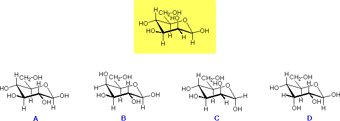

The yellow shaded box contains the structure of a pyranose aldohexose. Beneath that are the structures of four different stereoisomers, labled A through D. The questions posed below the formulas concern the structural relationship of the shaded reference structure to each of the other four.
